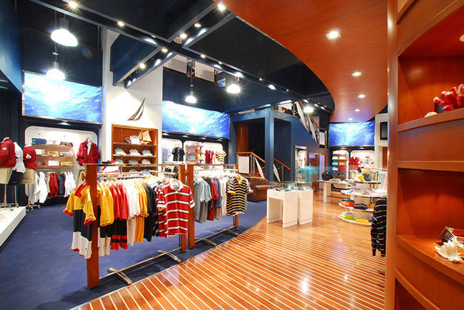
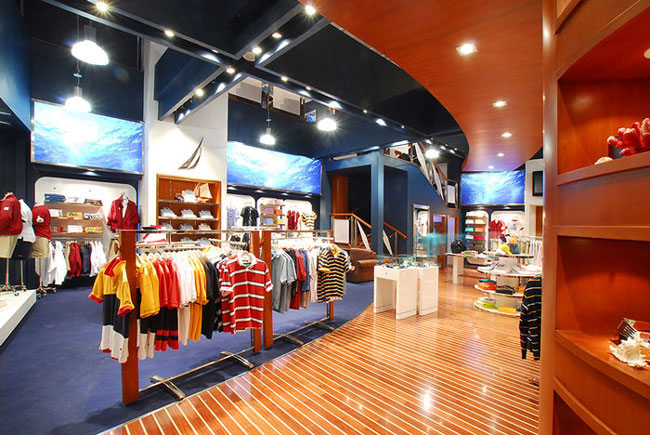

I worked for the Nautica Creative Services Department in two stints. First, as a graphic designer and then later as an Associate Art Director and eventually as Manager of the International Store Environment program.
The work included a variety of design projects . . . everything from lookbooks to ads, brochures and other marketing materials.
As Manager, I was a member of the team that re-imagined the Nautica store concept and initiated an international rollout, beginning with the Beijing, China flagship store.
 

After VF Corporation purchased Kipling, I became the Creative Lead for brand in North America. My responsibilities included: concept, copy, design and production of all US advertising, point-of-sale, marketing and promotional materials; management of brand asset workflow; coordination with marketing, sales, merchandising and executive team members


Sixty USA was a client for whom I produced ads, retail signage, and showroom graphics.
Brand identity is one of my favorite types of design. Capturing the essence and aspiration of a company through typeface and logo is one of the greatest design challenges.